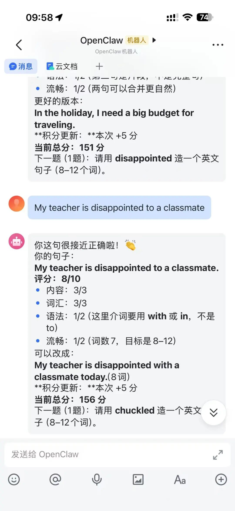

前段时间我写过一篇关于用 OpenClaw 做个人记录助手的文章，反响还不错，哈哈，阅读竟然超过14000。
后来有朋友问我：这东西除了记录，还能干嘛？
说实话，那时候我自己也没完全想清楚。直到有一天晚上，我女儿 Grace 在做英语作业，遇到一个词不会用，喊我过去帮忙。我给她讲了，她点点头，第二天又忘了。这个场景太熟悉了，其实学习这件事本身就需要重复、需要节奏、需要有人盯着。但我不可能每天都有精力一道题一道题陪着她过。
然后我就想到了 OpenClaw。
先说它和 ChatGPT 和豆包到底有什么不一样
很多人第一反应是：让 AI 辅导孩子学习，用 ChatGPT 或者豆包不就行了？
能用，但用过就知道问题在哪。ChatGPT 是”你问它答”的模式。孩子不问，它就不动。可对一个八岁的小孩来说，”主动提问”和”自我管理”恰恰是最难的部分。你总不能指望一个二年级学生每天自己打开 ChatGPT 说”请给我出五道两位数乘法题”吧，而且 ChatGPT 的沟通记录也无法沉淀下来做后续的分析。
OpenClaw 不一样的地方在于，它不是一个聊天窗口，它是一个跑在服务器上的 Agent。你可以给它写规则、设流程、建题库，它按照你定好的方式主动运转。你是设计者，它是执行者，换个说法：ChatGPT 像一个随叫随到的解题高手，OpenClaw 像你雇了一个全职的学习管家，而且这个管家严格按你写的手册办事。
实际跑起来是什么样的
我在 OpenClaw 里建了一个叫 workspace-grace 的工作区，专门给女儿用。里面的结构其实不复杂：
一个 SOUL.md定义它的性格和行为准则——别太严肃，别说废话，像个靠谱的大哥哥一个 USER.md记录 Grace 的基本信息：二年级、八岁、英语阅读水平大概在 Lexile 495L-645L，以及确定我和Grace两个Channel账号的差异和权限（同一Agent，不同Channel）一个 primary-homework-coach的 Skill，定义了出题规则、评分标准、积分体系一个公共题库，按难度分了三档 一个英语单词库，从她课本上整理出来的
沟通平台我选了飞书。原因很实际：Grace 主要用 iPad，飞书不用翻墙，体验还行；而且飞书有云文档和多维表格，天然适合做数据沉淀。
最关键的一步是账号隔离。我在飞书上给 Grace 单独开了一个账号，她只能在自己的频道里做题、交作业、看反馈。我作为管理员有另一个频道，可以看所有数据、调规则、改计划。Grace 那边看不到我这边的内容，我这边能看到她的全部学习记录。
英语学习：从”背单词”到”用单词”
举个最具体的例子。Grace 学校最近教了一批新词，像 auction、budget、curious、disappointed 这些。传统做法是抄写三遍、听写一遍，完事。但我一直觉得，背下来和会用是两码事。
我把这些词整理进 OpenClaw 的单词库，设了一个规则：每次给一个词，让她用这个词造一个完整的句子，要求 8-12 个词。造完之后 OpenClaw 会从内容、词汇、语法三个维度打分（满分 10 分），指出具体问题，再给一个改进版的句子让她看看差距。
实际效果比我预想得好。比如有一天她拿到 disappointed 这个词，造了一句”My teacher is disappointed to a classmate”。OpenClaw 给了 8 分，指出介词搭配错了，应该是 disappointed with 或 disappointed in，不是 to，这种纠错颗粒度很好，而且我可以方便后续帮助。

再后来我还加了 IELTS 口语风格的问答训练（当然是儿童适配版的），是那种”主问题 + 追问”的模式特别适合练口语。比如问她”What’s your favorite place to read?”，她回答之后再追问”Why do you like reading there?”。这比单纯背单词有意思多了，Grace 自己也觉得像在玩。
数学：一道一道来，别贪多
数学部分我的策略更简单：每次只出一题。
之前试过一次性出五题，发现她看到一堆题目就烦了。改成单题模式之后，心理负担小很多——做完一道，加个分，开心一下，想继续就再来一道。有时候她做完数学题意犹未尽，会主动说”再来一个”，这在以前是不太可能的。
从积分记录来看，她在 2 月 24 号那天一口气做了好几道两位数乘法：27×6、34×7、46×5、58×4、68×4、87×6……中间只错了一道（79×3 她算成了 307，正确答案是 237）。这种自发的连续练习，靠家长盯着催是很难出现的。
积分系统：不是奖励，是”被看见”
积分这个东西，我一开始其实犹豫要不要做。怕搞成”做题换奖品”的交易模式。
后来想明白了：积分的核心不是物质激励，是让努力被看见。每做完一题，OpenClaw 会立刻告诉她”本题 +5 分，累计 156 分，连续学习第 3 天”。这个即时反馈比什么都重要。孩子不怕辛苦，怕的是辛苦了没人知道。
具体的积分规则也不复杂：
完成一道练习 +5 全对额外 +3 连续学习第 N 天，额外 +N（上限 +7） 不扣分，永远不扣分
为什么不扣分？因为惩罚机制对小孩的学习动力是毁灭性的。做错了不扣分，只是没有全对奖励——这个区别很微妙但很重要。
两周下来，Grace 累计了 156 分（积分系统出错过很多次，中间被我清零过好几次，哈哈）。这个数字本身不重要，重要的是她知道自己的每一次努力都被记录下来了。
数据沉淀：从”感觉她在进步”到”看得见的进步”
这是我觉得 OpenClaw 最值钱的地方。
每次英语练习之后，OpenClaw 会自动把学习状态回填到飞书的文档里：哪个词练过了、造了什么句子、评分多少、问题出在哪里、改进建议是什么。同时还会把当天的积分摘要同步到一个飞书文档里。
这意味着什么？意味着我不需要每天坐在她旁边盯着，也能清楚知道：她这周练了哪些词、哪些词反复出错、造句的平均水平是多少、有没有在进步。
以前辅导孩子最让人焦虑的就是”不确定”——感觉她好像在学，但到底学了什么、掌握了多少、哪里薄弱，全靠猜。现在这些数据都在表格里，打开就能看。我能根据数据调整下周的训练重点，而不是凭直觉。
几个踩过的坑和技巧
说几个实际操作中遇到的问题，省得你们走弯路：
第一，飞书 Agent 响应极慢。
昨天使用非常卡，用 Claude Code 检查才发现， 飞书插件自带的工具（文档、聊天、知识库、云盘、权限、多维表格）schema 定义非常庞大。如果 Agent 实际上不需要直接调用这些 API（比如 grace
只需要通过飞书收发消息），应该在 channels.feishu.tools 中把它们全部设为 false，避免每次请求都把这些巨大的 tool schema 发给模型。
第二，规则不用一次写完。 我一开始想把所有规则都设计好再上线，结果发现越想越复杂。后来改成先跑一个最简单的版本——就是出题、答题、打分——跑了两天，看看孩子的实际反应再慢慢加规则。比如”单词学习优先造句，卡住了再切填空题”这条规则，就是跑了几天之后根据实际情况加上去的。
这就是 OpenClaw 的优势，就像一个真的教练一样，随时发文字让他调整。
第三，单词库要做归并去重。 Grace 课本上的词经常是变形后的：received、chuckled、staring……如果直接扔进词库，同一个词会出现两三次。我后来加了一条规则：每次新增单词必须先做词形归并（received → receive，staring → stare），再去重入库。这个细节不大，但不处理的话题库会越来越乱。
第四，别高估孩子对文字的耐心。 一开始我设计了一些需要她”朗读并提交音频”的任务，发现技术链路太长（录音 → 上传 → 语音转写 → 评估），而且她操作需要等待太久。后来果断砍掉，所有任务都改成文字可完成的。简单才能持续。
第五，这是一个技巧，图片输入比你想的有用。 Grace 爸爸（也就是我）经常直接拍课本上的词汇表发给 OpenClaw，它会自动识别、整理、归并，然后生成同类练习题。这比我手动一个个打字录入快多了。
第六，这也是一个技巧，用豆包输入法。 Grace 现在打字很慢，所以我让她使用豆包语音输入法，识别的很精准，我感觉比飞书语音自带的识别更好用，所以这个输入法一定要装。
这件事的本质
回头看，我搞这套系统，核心就是在解决一个问题：怎么帮助孩子高效地复习。
学校教新知识的部分其实没什么问题，老师会讲、课本会练。但学完之后有没有复习、复习的节奏对不对、薄弱的地方有没有反复练到。这些事情说起来简单，做起来全是细节：哪些词上周学了但还没巩固？哪类题反复错？今天该复习什么、练多少量合适？靠家长人肉盯，精力跟不上；靠孩子自觉，八岁小孩做不到。
OpenClaw 解决的就是这个”复习管不过来”的问题。它帮你记住每个知识点的状态，按规则安排练习节奏，错的自动进复习池，对的逐步拉长间隔。孩子每天打开飞书，不用想今天练什么——系统已经根据她的掌握情况安排好了。做完一道就有反馈，做错了马上纠正，不用等到周末才发现一堆问题堆在那里。
我想这是高效学习真正的样子，不是刷更多的题，而是在对的时间练对的内容。与其花两小时漫无目的地”复习”，不如花二十分钟精准地练那几个还没掌握的点。OpenClaw 做的事情不复杂，就是把这个”精准”的部分自动化了，而这恰恰也是我能帮助到 Grace 的地方。